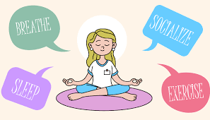
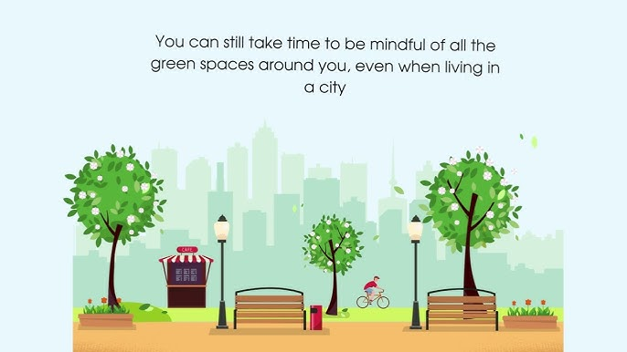

Daily Health Tips
Simple habits to keep you feeling great every day.
- Start your day with a healthy breakfast to fuel your body.
- Stay hydrated by drinking water throughout the day.
- Limit your screen time and take regular breaks.
- Get at least 7-8 hours of quality sleep each night.
- Incorporate fresh fruits and vegetables into every meal.
Lifestyle Tips
Adopt a lifestyle that promotes long-term health and well-being.

Stress Management
Practice mindfulness or meditation to reduce stress.
.jpg)
Healthy Eating
Plan your meals in advance to maintain a balanced diet.

Time Outdoors
Spend at least 30 minutes outside every day for fresh air and sunshine.
Exercise Tips
Stay active and energized with these exercise suggestions:
- Incorporate at least 30 minutes of physical activity daily.
- Try a mix of cardio, strength training, and flexibility exercises.
- Set achievable fitness goals and track your progress.
- Warm up before and cool down after your workouts.
- Choose activities you enjoy to stay motivated.